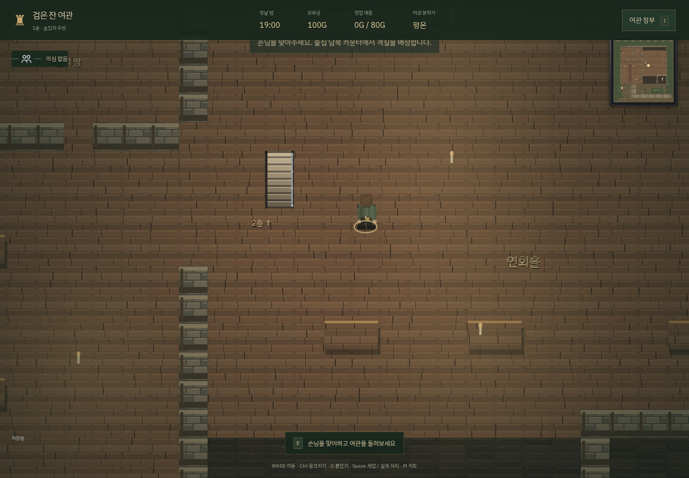
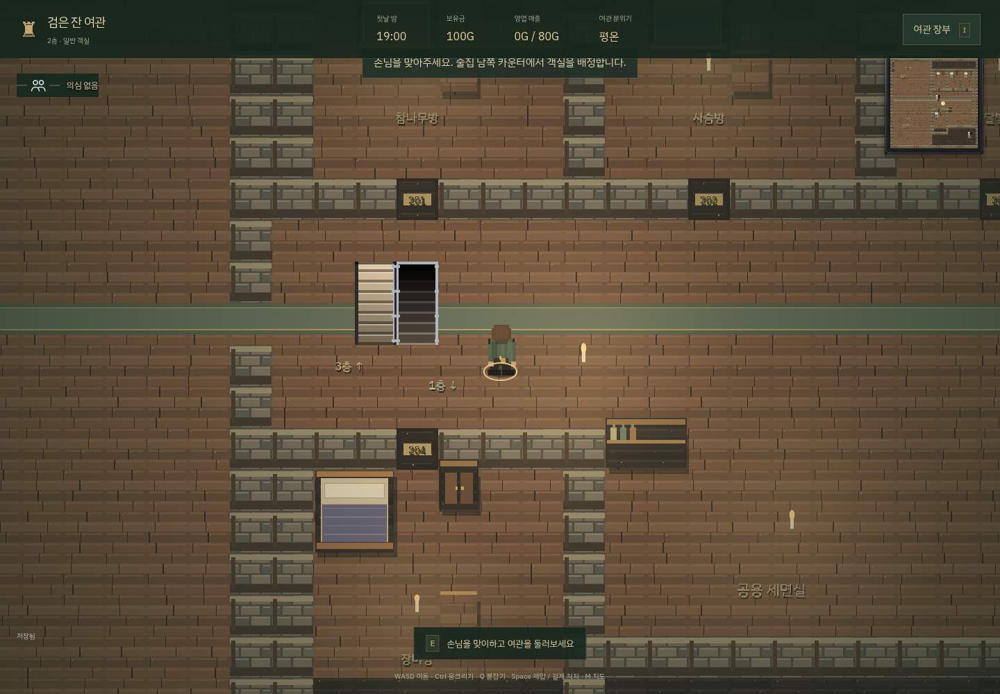
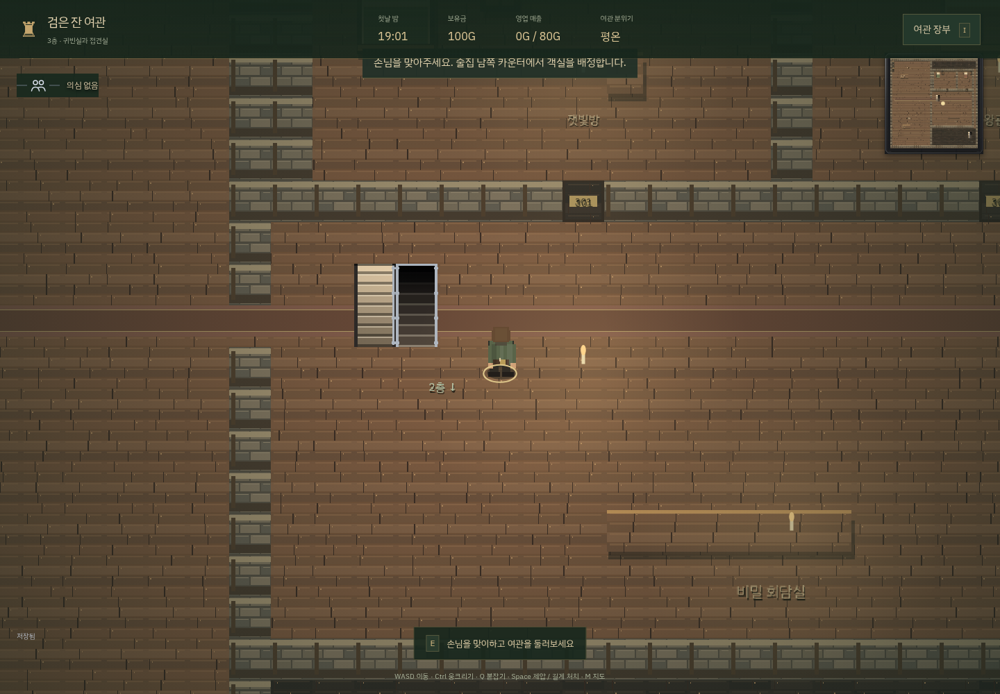
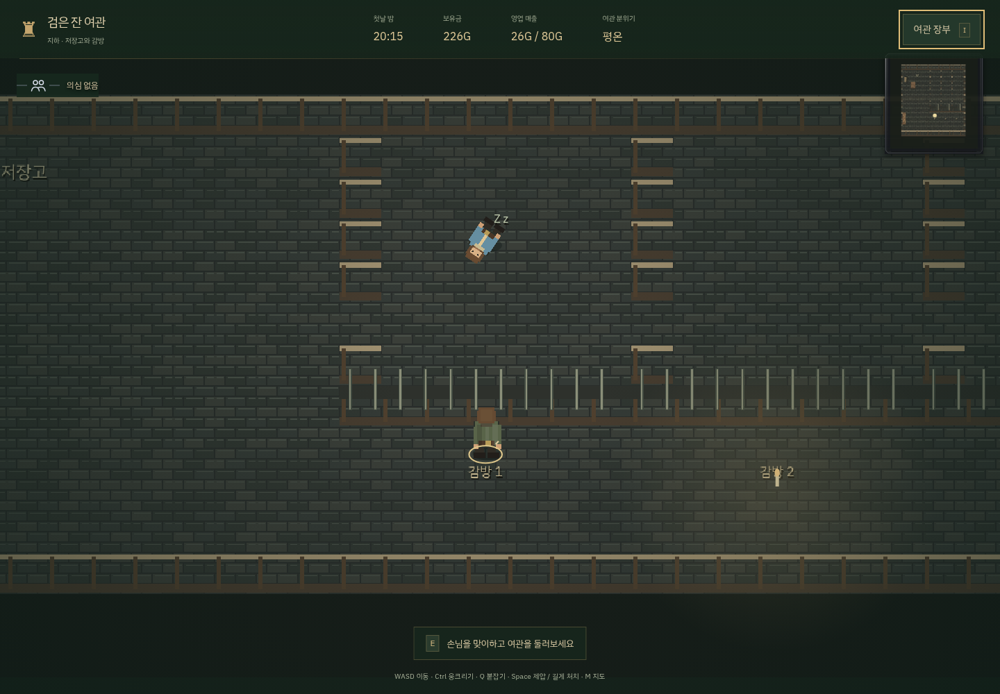

지상 3층과 지하 감방
공개 계단과 비밀 계단이 각 층을 잇습니다. 손님·급사·호위는 실제 공개 계단을 따라 이동하고, 주인은 비밀 계단으로 기절한 손님을 운반할 수 있습니다.


1층 · 술집·주방·연회홀


2층 · 일반 객실 4개


3층 · 귀빈실 2개·접견실


공개 계단과 비밀 계단이 각 층을 잇습니다. 손님·급사·호위는 실제 공개 계단을 따라 이동하고, 주인은 비밀 계단으로 기절한 손님을 운반할 수 있습니다.



